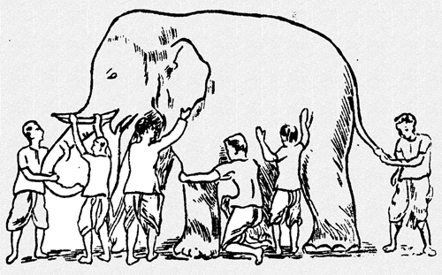

我为什么要做瞎子摸象的践行者
FuqiangWang - fujohnwang AT gmail DOTA com
瞎子摸象的故事， 我想没有人会不知道这个故事吧？！

这个故事通常用来讽刺某些人像这群瞎子一样，看问题过于片面， 可是故事真的就这么简单的结束了吗？
我之前写过几篇打了Tag的文字，叫#What’s in a story#, 如果有心，你会发现，同样一个故事，如果我改变一个小小的因素或者细节，就完全可以扭转整个故事的基调，然后转而让这个故事为了另一个论点而服务， 也就是说， 故事怎么讲，完全是由作者要表达的论点来决定的， 媒体工作者通常有一个信条，叫做：
Never let the truth get into the way of a good story.
说得其实就是这个道理， 故事最终是为某个目的服务的，否则， 干巴巴的讲论点， 或者再怎么苦口婆心的讲道理，也不会吸引多少人的关注力。
一个故事不但可以有二义性，还可以有多义性， 只是看你最终希望这个故事要帮助你表达什么， 比如同样这个瞎子摸象的故事， 扶墙老师就有不同的故事要讲…
新瞎子摸象的故事之个人篇
瞎子虽然眼睛瞎，但通常心跟明镜儿似的， 所以， 有一个瞎子听完其它人的陈述和争论之后，心里就犯嘀咕了， 为啥他们说的， 跟我自己摸完之后的感受不一样那？
于是这个瞎子就从这群争论的瞎子中脱离出来，转身回到了大象的身边， 这次他学乖了， 这里摸完之后， 换一个地方再摸， 我摸摸摸， 最终， 这个瞎子头上的那个灯泡亮了， “tmd，原来是这么回事啊”， 通过将不同时点和地点摸过的感受拼接在一起，这个瞎子终于大体上可以了解一头大象长啥样了…
新瞎子摸象的故事之团队篇
话说这帮瞎子吵啊，吵啊， 吵了三天三夜啊， 三天三夜， 这个时候，从他们当中蹦出一个team leader(或者外面给他们指派了一个team leader)， 说，“你们丫的别吵了， 先静静， 一个一个的说…”， 然后，这帮瞎子就One By One的又进行了一次陈述，当然，这次是比较冷静地进行了陈述， 当所有的瞎子都陈述完之后， team leader说， “那你们有没有想过，为什么你们每个人说的都不一样那？”， 然后这帮瞎子头顶的灯泡就都tmd亮了， “哦， 原来一头大象大体上长这样儿啊”
新瞎子摸象的故事之启示录
如果一个事物庞大到你无法一眼就看透它，了解它， 那么， 不妨先一小块儿一小块儿的去探索，然后再结合你探索的这些碎片成果进行拼装和推演， 慢慢地，你就会对这个庞然大物有了更多的了解（当然， 是否能够完全了解，我就不敢妄言了）。
这其实是一种方法论， 对于一些复杂的软件系统或者整个的世界来说， 一个人很难一上来就完全了解他们， 但你又不能就凭你的些许了解就断下结论， 否则你就有“旧的瞎子摸象”之嫌， 可是，你也不能畏头畏尾而畏缩不前， 这个时候，扶墙老师的“新瞎子摸象”的故事就可以派上用场了。 在这个方法论的指导下，你要么自己多从不同的层面去了解你要了解的目标实体， 你要么就结合其他人对同一目标实体的不同认识来了解它， 总之， 你手里收集的碎片越多，离你拼接并推理出这个实体的全貌就越近！
查理芒格很多年前就提出过一个理论， 叫“格栅理论”， 意思是说， 针对同一个事物（比如某个行业的企业）， 你能从不同的角度，运用不同学科的知识和实践方法来观察它， 了解它，那么，你就比别人更能看透它， 也更能为你的决策提供必要的定心丸， 其实， 这里说的也是类似的道理。
对于一个架构师来讲， 你最好是有新瞎子摸象的故事之个人篇中那个瞎子的觉悟和特质， 因为只有这样，你做出的架构决策才有可能是最合适的。
哥前几天说过， 一个合格的架构师，需要能够 own the big picture and make the best-match tradeoffs, 其实这里的单词都是有讲究的，看起来容易，其实你要真做起来就不那么容易了， 打个比方来说， 我为什么用own， 而没有用have或者know？ 比如什么叫the best-match tradeoffs? the best-match的评判标准是什么？要知道什么叫the best-match tradeoffs，你又要做哪些工作？ 各位看官不妨去思考一下…
对于这个世界来说， 很多事情都复杂庞大到哥无法一眼看透他们，而我又没法转眼间就进化成神一样的存在，所以，我就只能像那个摸象的瞎子一样， 尽量的多去东摸摸，西摸摸了…
另外， 新瞎子摸象的故事，不仅仅只是作为方法论指导你个人的， 而且， 最好也能影响你周边的人， 一个人做所有的“摸象”工作太辛苦了， 效率也不见得高， 所以，不妨让大家都动起来， 相互分享， 我为人人，人人为我， 如果能够形成这样的氛围，那就善莫大焉了。 我愿意分享这篇文字，本身也在践行这一理念。
以上就是我作为一个瞎子摸象的践行者的宣言！
欢迎加入「福强私学」
跨越2190个日夜，始终坚持“实践 + 原创”打造的715125字专属知识库，囊括了（但不限于）从职场、技术、管理与商业等多个板块的内容。
- 一个ChatGPT触达不到的地方
- 一个带你超越AI/人工智能的地方
- 一个与你一起成长的地方

开天窗，拉认知，订阅「福报」，即刻拥有自己的全模态人工智能。